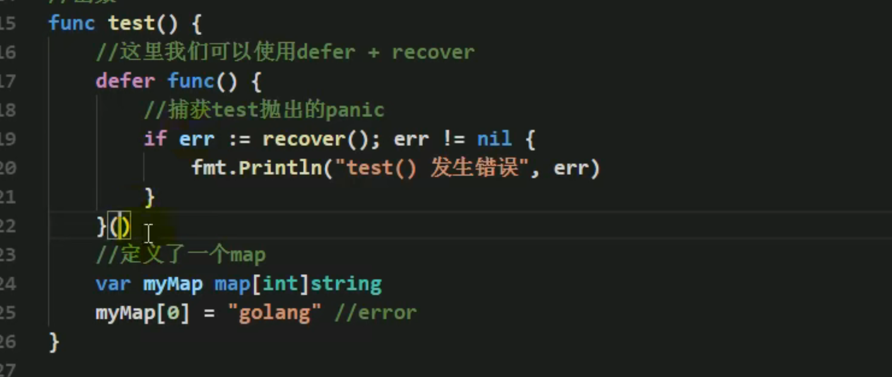
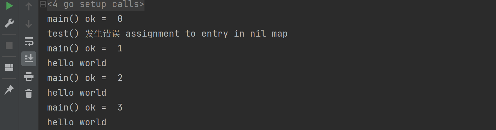

13 Channel-select 解决阻塞¶
Channel 可以声明为只读/写¶
管道的默认：既可读又可写。
但在有些方法里面，需要让 Channel 只能读或者只能写。
package main
func main(){
var chan1 chan<- int //只能写
chan1 = make(chan int, 3)
chan1 <- 20
fmt.Println("chan1 = ", chan1)
var chan2 <- chan int
num2 : <- chan2
fmt.Println("num2", num2)
}
在函数中使用：
func main(){
var ch chan int
ch = make(chan int, 10)
exitChan := make(chan struct{}, 2)
go send(ch, exitChan)
go recv(ch, exitChan)
var total = 0
for _ = rfange exitChan{
total++
if total == 2 {
break
}
}
fmt.Println("over...")
}
// send 传参 ch 定义为只能写操作
func send(ch chan<- int, exitChan chan struct{}){
for i:= 0; i < 10; i++{
ch <- i
}
close(ch)
var a struct{}
exitChan <- a
}
// revc 传参 ch 定义为只能读操作
func recv(ch <-chan int, exitChan chan struct{}){
for {
v, ok := <-ch
if !ok{
break
}
fmt.Println(v)
}
var a struct{}
exitChan <- a
}
使用select解决阻塞问题¶
传统的方法在遍历管道的时候，如果不关闭就会导致阻塞 deadlock，但是在实际的开发中，我们不好确定什么时候关闭管道，使用select方式来解决。
func main(){
intChan := make(chan int, 10)
for i := 0; i< 10; i++{
intChan<- i
}
stringChan := make(chan string, 5)
for i := 0; i < 5; i++ {
stringChan <- "hello" + fmt.Sprintf("%d", i)
}
//label:
for{
select {
case v: = <-intChan :
fmt.Printf("从intChan读取数据%d\n", v)
case v: = <-stringChan :
fmt.Printf("从intChan读取数据%s\n", v)
default :
fmt.Printf("取不到", v)
//后面可以加入取不到后的业务逻辑
return //退出主函数，也可以用label退出
// break label
}
}
}
解决协程中出现的panic¶
如果运行一个协程，但是这个协程出现了<font style="color:#E8323C;">panic</font>，如果我们没有捕获这个<font style="color:#E8323C;">panic</font>，就会造成整个程序的崩溃，这时候我们可以在goroutine中使用<font style="color:#1890FF;">recover</font>来捕获<font style="color:#F5222D;">panic</font>来进行处理，这样即使这个协程发生了问题，但是线程还是不受到影响。
来看一下使用场景，定义两个协程，其中一个协程不小心写错了，于是整个主程序就崩溃了，另外一个协程就因为这一个错误无法执行。看如下代码：
// sayHello 定义一个简单且正确的协程
func sayHello(){
for i := 0; i < 10; i++{
time.Sleep(time.Second)
fmt.Println("hello world")
}
}
func test(){
var myMap map[int]string //没有make就赋值了，报panic
myMap[0] = "golang"
}
func main(){
go sayHello()
go test()
for i := 0; i < 10; i++{
fmt.Println("main() ok = ", i)
time.Sleep(time.Second)
}
}
运行结果：


// sayHello 定义一个简单且正确的协程
func sayHello(){
for i := 0; i < 10; i++{
time.Sleep(time.Second)
fmt.Println("hello world")
}
}
func test(){
defer func(){
if err := recover(); err != nil{
fmt.Println("test() 发生错误", err)
}
}()
var myMap map[int]string //没有make就赋值了，报panic
myMap[0] = "golang"
}
func main(){
go sayHello()
go test()
for i := 0; i < 10; i++{
fmt.Println("main() ok = ", i)
time.Sleep(time.Second)
}
}
👾 注意：如果运行时候出现<font style="color:#F5222D;">createProcess error=5，拒绝访问</font>的错误，记得关掉360等安全软件！
运行结果：

更新: 2022-02-23 15:21:40
原文: https://www.yuque.com/xiaoshan_wgo/codingnotes/tsmlqa